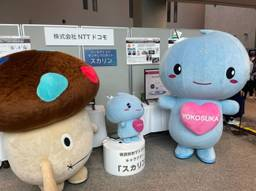
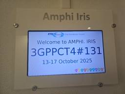

ENGINEERING BLOG ドコモ開発者ブログ
https://nttdocomo-developers.jp/
ENGINEERING BLOG ドコモ開発者ブログ
フィード

YRPオープンイノベーションデー2025にて6GやＡＩ、センシングの取組みを展示しました！
ENGINEERING BLOG ドコモ開発者ブログ
はじめに こんにちは。 NTTドコモ 6Gテック部の久米とクロステック開発部の河内、高橋です。 今回は、昨年に引き続き最先端の技術を一般公開する場「YRPオープンイノベーションデー2025」に、私たち6Gテック部とクロステック開発部が参加してきたのでその内容をご紹介します。 今年は6Gに向けた最新の取組みだけでなく、社会インフラの診断支援AIやプライバシーに配慮した人物センシングに関する取組みも展示し、多くの方々にご紹介する貴重な機会となりました。 会場のドコモブースにはドコモダケやスカリンも登場して、地域の方々とも交流できる賑やかな2日間となりました！ 下の写真はドコモダケとスカリンがドコモ…
2日前

6Gでも注目されるRestoration (復旧) とは？3GPP会合CT4#131参加レポート
ENGINEERING BLOG ドコモ開発者ブログ
はじめまして。ドコモ 6Gテック部の本田と申します。 移動通信業界において6Gに関する検討が本格化する中で、ついにCT領域においても10月より6Gの議論が開始されました。その中でも今回は、私が参加したCT4#131会合、およびそこで議論されていたテーマの一つであるRestoration (復旧) に関してレポートいたします。
3日前

3GPPの選挙はどれだけ大変？大激戦となった副議長選挙を振り返って
ENGINEERING BLOG ドコモ開発者ブログ
3GPP RAN1の副議長に当選しました こんにちは！NTTドコモ 6Gテック部の原田です。 私はこの度、2025年10月14日にチェコ・プラハでの3GPP会合中に、RAN WG1（RAN1）の副議長に選出されました。 ちなみにこちらの記事でも3GPPの副議長に当選した話がありますが、今回のRAN1副議長と記事のTSG-CT副議長はポストが異なっています。 記事の中で紹介されているように、3GPPは第3世代以降の移動通信システムの国際標準仕様を策定している団体で、国際標準仕様を構成する様々な分野ごとに担当のワーキンググループ（WG）が存在しており、その中の一つが今回私が副議長に選出されたRAN…
12日前
Best Paper Award and Presentation on 6G ISAC Waveform Design at IEEE APCC 2024
ENGINEERING BLOG ドコモ開発者ブログ
Introduction About IEEE APCC 2024 Summary of the presentation Background Problem to be solved Proposed method Computer simulation results After the presentation Introduction Hello. This is Juan Liu from the DOCOMO Beijing Communications Laboratories. We presented our research paper on the 6G ISAC wa…
25日前
生成AIを「知る」から「使う」へ。ドコモ社内の生成AI活用を加速させる「GenAI講師コミュニティ」の挑戦
ENGINEERING BLOG ドコモ開発者ブログ
みなさんこんにちは！NTTドコモ サービスイノベーション部の森木銀河と申します！ ドコモ社内では生成AI研修を実施しても、社員の業務に活かされない場合があること、「知っている」と「使っている」の間にある大きな壁を乗り越えられないことが大きな課題でした。生成AIの学びを社員の行動変容、そして価値創出へとつなぐために、私たちサービスイノベーション部は現場の有志社員が主役となって生成AIを教え、学び合うコミュニティ、「GenAI講師コミュニティ」を発足しました。本記事では、開始からわずか半年で社内に生成AI活用の大きなうねりを生み出した取り組みの裏側をご紹介します。 現場社員が主役！「GenAI講師…
25日前
2025年 電子情報通信学会 ソサイエティ大会参加レポート (EMC)
ENGINEERING BLOG ドコモ開発者ブログ
はじめに 6Gテック部 無線デバイス技術担当の石岡です。本記事では、私が担当しているEMC（電磁環境両立性）に関する研究活動や、2025年9月に岡山大学で開催された電子情報通信学会ソサイエティ大会への参加報告をお届けします。 はじめに EMCってなに？ 学生と企業の交流イベント「EMCJ Touchpoint」 学会発表 最後に EMCってなに？ EMCは「Electro-Magnetic Compatibility」の略語であり、「電磁環境（または電磁的）両立性」あるいは「電磁環境適合性」と訳されています。我々は、携帯電話基地局や端末の出す電波が人体やほかの機器に何らかの影響を与えないような…
1ヶ月前
Google Cloud | NTTドコモグループ共催！社内生成AIイベント『+AI Prism』で広がる未来の可能性
ENGINEERING BLOG ドコモ開発者ブログ
こんにちは！NTTドコモ サービスイノベーション部です。 2025年9月25日、NTTドコモグループは自社社員を対象とした大規模な生成AIイベント「＋AI Prism」をGoogle Cloudと共催し、渋谷ストリームGoogleオフィスにて開催しました。 +AI Prism 当日は、NTTドコモグループ各社から生成AIへ高い関心を持つ社員が集結し、最新技術のインプットから実践的なワークショップ、そして交流といったプログラムで、多くの熱気に包まれたイベントとなりました。本記事では、ドコモグループのAI活用の「今」と「未来」が詰まったこのイベントの開催に至った背景、当日の様子や参加者の声をご紹介…
1ヶ月前
実際の扉を開けるとバーチャル空間につながる先進MR技術を大阪・関西万博に4/23と9/19で展示
ENGINEERING BLOG ドコモ開発者ブログ
はじめに こんにちは！R&D戦略部社会実装推進担当の萩森です。 ドコモR&Dは、大阪・関西万博にて2025年4月23日と9月19日の2日間行われた「けいはんな万博 in 夢洲」に、実際の扉を用いてリアル空間とバーチャル空間を自然につなぐMR技術（以下、本技術）を展示しました。本記事では主に2回目の9月19日の展示の様子や1回目と比較した2つの変更点をご紹介し、2度の体験展示を終えたまとめをお話しします。 1回目の展示や技術詳説はこちら． はじめに 「けいはんな万博 in 夢洲」とは MR技術を使った扉をくぐってバーチャル旅行しよう！ 目の前の扉を開けたら、そこは別空間 変更点1：扉開度に連動す…
1ヶ月前
生成AIを活用したマンスリーフィードバック面談補助ツール
ENGINEERING BLOG ドコモ開発者ブログ
はじめに 株式会社ドコモCS 113事業部 愛知113センターの稲垣新之介と申します。 普段はコールセンターにてスーパーバイザーとして業務に従事しております。 このたび、Microsoft社が提供するAIチャット「Copilot Chat」の活用事例を、2025年8月5日にNTTドコモ全従業員を対象に開催された想像力コンテスト「ドコモCopilot万博」にて発表させていただき、ありがたいことに最優秀賞受賞することができました。 当日の発表では、日々の業務に生成AIを取り入れることで、業務の生産性を大きく向上させる可能性についてご紹介しました。 会場には約500名の方が参加され、生成AIへの関心…
1ヶ月前
気軽に即座に上司からのレビューを受けられるプロンプトを作ってみた
ENGINEERING BLOG ドコモ開発者ブログ
はじめに NTTドコモ サービスデザイン部の宇佐見 友理です。普段の業務では部内の開発業務・日常業務に対してAIをどう活用していくかの方針策定やAI推進の取り組みをしています。今回はどの業種限らず皆さんが苦労しているであろう"資料作成"の上長レビューにフォーカスを当ててプロンプトを作成し、社内のM365 Copilotのコンペで2位入賞しましたので、ご紹介できればと思います。コンペでは発表はオンライン、視聴はオフラインという形で開催され、視聴いただいている社員の皆様が興味のある発表についてスタンプを押して投票いただく形式でした。私の"資料作成"の上長レビューのプロンプトに多くの方がスタンプを押…
1ヶ月前
【5Gの仕様凍結に向けて】3GPP CT1#156会合を紹介！
ENGINEERING BLOG ドコモ開発者ブログ
こんにちは。ドコモ 6Gテック部の林 悠眞（はやし ゆうしん）です。 今回は、2025年8月25日から29日にスウェーデン・ヨーテボリで開催された3GPP CT1#156会合の模様をお伝えします。 CT1とは CT1#156会合の主な議題 AIoT（Ambient IoT） PWS over Satellite AI/ML（Artificial Intelligence / Machine Learning） NG-RTC おわりに まず3GPPにおけるCTの役割については下記の記事でご紹介しております。ぜひご確認ください。 nttdocomo-developers.jp CT1とは CTグル…
2ヶ月前
最難関国際会議KDD 2025でドコモが現地発表！
ENGINEERING BLOG ドコモ開発者ブログ
サマリ 初めまして NTT ドコモ R&D戦略部の現在3年目社員の村上友希です。 普段は因果推論や機械学習を用いたデータ分析業務に従事しています。 データ分析コンペであるKDD CUP2025にて全4部門中2部門で特別部門賞を受賞、KDD Workshopにて論文が2本採択され、村上を含む6名がカナダ現地で発表を行ってきました。 KDD CUPの手法やKDD Workshopでの論文内容については、後日公開予定の記事をご覧ください。 本記事では、今回参加したKDD 2025の現地の様子や発表の様子についてメインでご紹介します 。 KDDとは？ KDD(Knowledge Discovery a…
2ヶ月前
【コアネットワーク6G標準化の最前線に迫る】3GPP SA2#170会合を紹介！
ENGINEERING BLOG ドコモ開発者ブログ
はじめに こんにちは！ドコモ 6Gテック部の野﨑です。 2030年代の社会を支える次世代通信規格「6G」の実現に向けた動きが本格化してきました。 本記事では、2025年8月25日～29日にスウェーデン第二の都市であるヨーテボリで開催された、3GPP SA2#170会合の様子を速報としてお伝えしつつ、これから6Gにおけるコアネットワークの標準化がどのように進んでいくのか、解説します。 「そもそも3GPPって何？」という方もいらっしゃるかもしれません。3GPP (3rd Generation Partnership Project) とは、モバイル通信の国際的な標準仕様を策定するプロジェクトです。…
2ヶ月前
インターンシップ体験記：LLMを用いた行動予測シミュレーション
ENGINEERING BLOG ドコモ開発者ブログ
こんにちは！NTTドコモ R&D戦略部の青栁です。 普段の業務では、ドコモデータやLLM（大規模言語モデル）を活用したマーケティング技術の研究開発をしています。 弊社では、2025/8/25 ~ 9/5に現場受け入れ型インターンシップを実施しました。 私が所属するチームでは2名の学生さんを受け入れ、トレーナーとして約2週間サポートさせて頂きました。 ↓ポストの詳細はこちら information.nttdocomo-fresh.jp 今回は、インターンシップに参加された竹内さんと吹田さんにそれぞれ体験記を書いて頂いたのでご紹介したいと思います。 この記事の主な想定読者（1つでも当てはまった方は…
2ヶ月前
ドコモCCoEがAWS Step Functions分散マップで実現した大規模ログ統合基盤
ENGINEERING BLOG ドコモ開発者ブログ
NTTドコモが挑む、4万人以上が利用する大規模Slackのログ基盤構築。AWS Step Functionsの分散マップを活用し、15万超のチャンネルからのログ収集を自動化したアーキテクチャとノウハウを解説します。
2ヶ月前
【IEEE VTS APWCS2025】6Gに向けたドコモR&Dの取組みを発表
ENGINEERING BLOG ドコモ開発者ブログ
はじめに こんにちは！6Gテック部 NTN技術担当の島村と無線アクセス技術担当の林です。 今回は、今年の8月に開催された「IEEE VTS Asia Pacific Wireless Communications Symposium (APWCS 2025)」で行った発表についてご紹介します。 はじめに 国際会議「IEEE VTS APWCS 2025」について 技術概要 HAPSが提供する通信性能のシミュレーション評価 AI/MLを用いた将来の通信品質変動の予測に基づく通信制御技術の評価 発表の様子 発表を終えて 関連リンク 国際会議「IEEE VTS APWCS 2025」について 「IE…
2ヶ月前
NTTドコモのGitHub Copilot Businessの運用について
ENGINEERING BLOG ドコモ開発者ブログ
NTTドコモのGitHub Copilot導入事例。開発生産性を最大化しつつ、セキュリティとコストのガバナンスをどう両立させたのか？大企業ならではの具体的な運用戦略をご紹介します。
2ヶ月前
6Gの未来を形にする仕事、始まりました – 無線編
ENGINEERING BLOG ドコモ開発者ブログ
6G無線標準化のラポータに任命されました こんにちは！NTTドコモ 6Gテック部 無線標準化担当の熊谷です！ 2025年6月、プラハで開催された3GPP RAN全体会合（RAN#108）にて、「6G無線に関する技術検討」が正式に承認されました。これは、次世代ネットワークを構成する無線基盤技術を形づくるための国際的な取組みのスタート地点であり、業界としても大きな節目となる出来事でした。 そのなかで私自身、光栄にもこの技術検討のPrimary Rapporteur（主査）に任命されることになりました。ドコモが脈々と繋いできた役割を継承していくことに、大きな誇りと責任を感じています。 今回は、これか…
2ヶ月前
Leading 3GPP’s 6G Architecture Study: A Personal Milestone and Shared Journey
ENGINEERING BLOG ドコモ開発者ブログ
Shaping the Foundations of 6G: A New Chapter in System Architecture Hi! I'm Malla from DOCOMO Euro-Labs. At the 3GPP SA Plenary #108 held in Prague in June 2024, I had the honor of witnessing and contributing to a pivotal step forward for our industry. The Study Item on 6G System Architecture was of…
3ヶ月前
6Gの未来を形にする仕事、始まりました
ENGINEERING BLOG ドコモ開発者ブログ
6Gアーキテクチャ標準化のRapporteurに任命されました こんにちは、ドコモユーロ研のMalla（マラ）です。 2024年6月、プラハで開催された3GPP SA全体会合（SA#108）にて、「6Gシステムアーキテクチャに関するスタディ項目」が正式に承認されました。これは、次世代ネットワークの共通基盤を形づくるための国際的な取組みのスタート地点であり、業界としても大きな節目となる出来事でした。 そのなかで私自身、光栄にもこのスタディのPrimary Rapporteur（主査）に任命されることになりました。率直に言って、驚きとともに、身の引き締まるような気持ちです。この任命は私個人の取組み…
3ヶ月前
情報通信技術賞 TTC会長表彰 (2025年度)を受賞しました
ENGINEERING BLOG ドコモ開発者ブログ
こんにちは。NTTドコモの石川です。 先日の佐藤さんの投稿 と 山内さんの投稿 にあるようにドコモから5名TTC表彰を受賞しました。私は光栄にも2025年度 情報通信技術賞 TTC会長表彰を受賞しました。これまでご指導・ご支援くださったみなさまに、心から感謝申し上げます。 この表彰は、私一人の力ではなく、社内外の多くの方々と連携しながら取り組んできた標準化活動の成果だと感じています。これまでの活動をご評価いただけたことを、大変嬉しく、そしてありがたく思います。 この機会に、標準化活動に関しての思い出に残ったエピソードを紹介させてください。 2025年度 情報通信技術賞 TTC会長表彰 式典 -…
3ヶ月前
【IEEE VTC 2025-Spring】6Gに向けたNRNTビームフォーミング技術を発表
ENGINEERING BLOG ドコモ開発者ブログ
はじめに こんにちは．6Gテック部・無線アクセス技術担当の毛利檀です． 6月下旬に開催された国際会議「IEEE VTC-2025 Spring」にて6G無線技術に関する研究発表を行いました[1]ので，本記事ではこちらについてご紹介します． はじめに 国際会議「IEEE VTC-2025 Spring」について 発表の概要 研究背景 課題 提案したビームフォーミング技術 計算機シミュレーション結果 発表を終えて 引用文献 国際会議「IEEE VTC-2025 Spring」について VTC (Vehicular Technology Conference) はIEEE VTS (Vehicula…
4ヶ月前
ITU-R WP5D会合が開催されました！
ENGINEERING BLOG ドコモ開発者ブログ
兵庫県神戸市で開催されたITU-R会合にて、NTTドコモが次世代6G技術を展示。国際標準化への挑戦と未来の通信技術をご紹介。
4ヶ月前
MIRU2025 展示紹介 〜スマート農業、映像コンテンツ解析、自動運転バス遠隔監視システムの研究開発と社会実装〜
ENGINEERING BLOG ドコモ開発者ブログ
はじめに こんにちは、クロステック開発部の水野、春山です。 株式会社NTTドコモは2025年7月29日〜8月1日に開催される「画像の認識・理解シンポジウム MIRU2025＠国立京都国際会館」のスポンサーとして企業展示に出展いたします。 ブースは企業展示会場のG12（会場レイアウト図）です。 展示ブースではドコモR&Dにおける動画像認識に関する研究開発と社会実装の取り組み紹介として下記3点の展示をいたします。 ① スマート農業の研究開発と社会実装 ② ドコモの動画像解析の取り組み ③ ドコモの自動運転バス遠隔監視システムの取り組み 昨年度展示していた内容（link）からのアップデートもあるので…
4ヶ月前
2025年度情報通信技術標準化奨励賞を受賞しました
ENGINEERING BLOG ドコモ開発者ブログ
こんにちは！NTTドコモ 6Gテック部の山内です。今回は、2025年度情報通信技術標準化奨励賞の受賞に関して本記事にてご報告します。 一般社団法人情報通信技術委員会(TTC)およびTTC表彰について 情報通信技術標準化奨励賞の受賞について おわりに 一般社団法人情報通信技術委員会(TTC)およびTTC表彰について 国内の情報通信ネットワークに関する標準化を扱うSDO（標準化団体）の一つとして一般社団法人情報通信技術委員会(TTC)という組織があります。ドコモを含む情報通信に関係する多くの国内企業・団体がTTCの活動に参加し、連携しながら国内の標準仕様の策定を進めています。TTCでは、情報通信ネ…
4ヶ月前
一般社団法人情報通信技術委員会より、2025年度功労賞を受賞したお話
ENGINEERING BLOG ドコモ開発者ブログ
はじめに NTTドコモ コアネットワークデザイン部の佐藤と申します。このたび、情報通信ネットワークに関する標準化とその普及を行う一般社団法人 情報通信技術委員会（以下、TTC)より、「PSTNマイグレーションに関するIP相互接続仕様の標準化活動にかかわる功績」が認められ、2025年度功労賞を受賞いたしました。 本記事では、受賞した功績の概要とこれまでの営み、並びに活動を振り返って思うことを綴ります。 表彰式 はじめに そもそも、TTCとは？ 表彰にあたり、どのような活動が認められたのか？ PSTNマイグレーション？ この活動を通じて そもそも、TTCとは？ TTCのサイトにおいて、以下のように…
4ヶ月前
新入社員が語る！展示会の裏側【WJ×WTP2025出展レポート第2弾】
ENGINEERING BLOG ドコモ開発者ブログ
はじめに こんにちは！6Gテック部 無線標準化担当の新入社員の西川と大友です。 ドコモの6Gテック部は、2025年5月末に東京ビッグサイトで開催された「ワイヤレスジャパン×ワイヤレス・テクノロジー・パーク2025(以下WJ×WTP2025)」で最新技術を展示しました。 本記事では展示していた6G Harmonized Intelligenceプロジェクトのロボットたちと私たち新入社員の展示会に参加した感想を中心に届けします！ 内容 はじめに 内容 展示ロボットの紹介 「6G Harmonized Intelligence」プロジェクトとは ハーモナイズドセンサレスロボット 自律共生ロボット 「…
4ヶ月前
NTTドコモグループ「Vibe Coding 大会」開催レポート〜コードを書かずにアイデアを形に〜
ENGINEERING BLOG ドコモ開発者ブログ
はじめに Vibe Coding: コードから「意図」へのパラダイムシフト Vibe Codingの特徴 AI-assisted Codingとの決定的な違い 開催の背景と目的 企画のきっかけと背景 イベントのコンセプトとゴール ドコモ社員とディレクション力 タイムテーブル Vibe Codingのルール 開発に関するルール 参加形式とセキュリティ Gemini Canvasを利用した初心者向けVibe Coding講座 プレビュー機能の威力 ドコモグループでの利用しやすさ（クラウド共通基盤） 上級者: プライベートツールも自由に利用 中級者: GitHub Enterprise 利用可能、ツ…
5ヶ月前
“未来の当たり前”を体感！大阪・関西万博で私たちが届けたHAPS技術と想い
ENGINEERING BLOG ドコモ開発者ブログ
はじめに こんにちは！6Gテック部 NTN技術担当の外園です。 ドコモの6Gテック部では、大阪・関西万博で開催された「Beyond 5G Ready Showcase」で最新技術を展示しました。本記事では展示内容や注目ポイントなどをご紹介します。 はじめに 展示会概要 展示内容紹介 「HAPSの模型」 「ゲートウェイのモックアップ」 「HAPSシミュレータ」 来場者の反応・エピソード おわりに 謝辞 展示会概要 「Beyond 5G Ready Showcase」は、2025年5月26日(月)から6月3日(火)まで大阪・関西万博の「未来のコミュニティとモビリティ ウィーク」で開催された、次世代…
5ヶ月前
若手社員の標準化会合参加体験談
ENGINEERING BLOG ドコモ開発者ブログ
こんにちは！NTTドコモ 6Gテック部 無線標準化担当3年目社員の平野です！ 私は3GPP (3rd Generation Partnership Project)標準化会合に参加し、5Gネットワーク/端末に関する世界共通のルール作りを進めています 。 今回は会合でどんなことをしているかや、2025年5月にマルタで開催された会合に参加した私の体験談をお伝えします。3GPP標準化会合が「何か」や「どんなことをするか」はこちらの記事などで詳しく紹介されているので、今回は3年目社員の私が行っていることや私自身の思いや考えにフォーカスして紹介します。 3GPP・RAN1とは 5月会合の自分の中での位置…
5ヶ月前